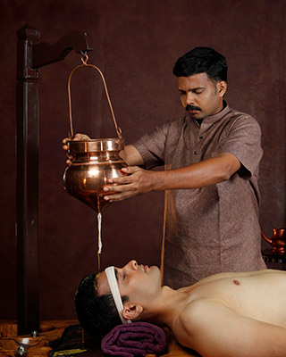
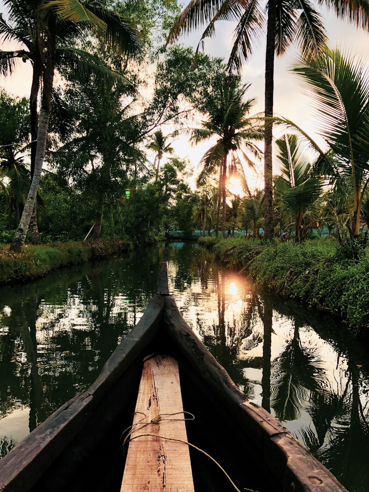
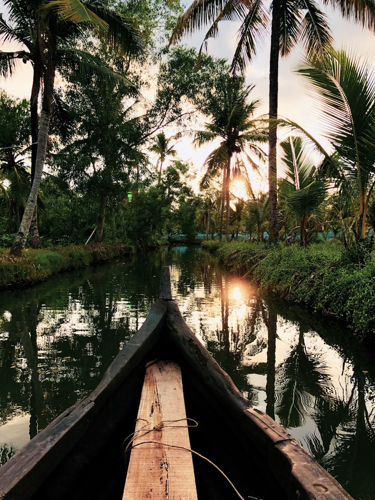
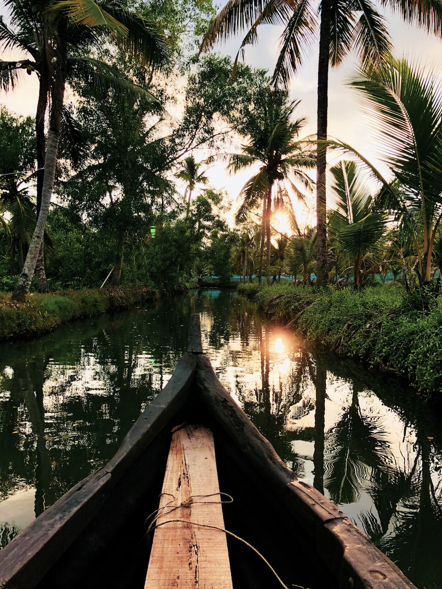

Diversity of Kerala.
When we hear someone say 'Kerala', so many beautiful sights cross our mind. Famed as God's Own Country, Kerala is indeed an ideal vacation spot and has also been called as one of the paradises of the world. Kerala is well known for its scenic locations, the Kerala architecture which is used to design its majestic temples, festivals like Onam, its variety of food and also its vast and rich Malayalam literature

 

